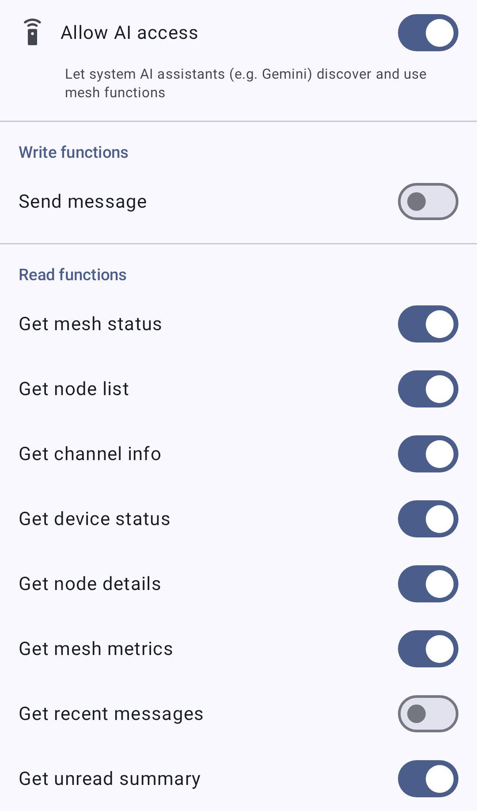

App Functions expose Meshtastic capabilities to the Android system and to on-device AI assistants (such as Gemini) through the Android App Functions API. With them enabled, an assistant can discover and trigger mesh workflows for you — for example sending a message or checking your mesh status — without you opening the app. App Functions are available on Google-flavor Android builds only.
ℹ️ Note: This is separate from the in-app Chirpy assistant. App Functions let the system AI assistant act on your mesh; Chirpy is a conversational assistant inside the Meshtastic app itself.
Control App Functions from Settings → System AI. The screen has:
⚠️ Important: App Functions ship switched on. On a Google-flavor build the master toggle and every individual function, Send message included, start enabled — so an assistant can read your mesh data and send messages to your mesh until you turn Allow AI access off.
The functions are grouped into a Write section (functions that change something or send data to your mesh) and a Read section (functions that only return information).

The screenshot has Send message and Get recent messages switched off to illustrate per-function control; a fresh install shows every switch on.
| Function | What it does |
|---|---|
| Send message | Sends a text message to a contact (direct message) or to a channel. The mesh carries at most 233 bytes of text, so keep assistant-composed messages short. |
| Function | What it returns |
|---|---|
| Get mesh status | Whether you’re connected to a radio, and how many nodes are online. |
| Get node list | The list of nodes on your mesh. |
| Get channel info | Information about your channels. |
| Get device status | Status of your connected radio. |
| Get node details | Detailed information about a specific node. |
| Get mesh metrics | Telemetry and metrics from your mesh. |
| Get recent messages | Recent messages from your conversations. |
| Get unread summary | A summary of unread messages. |
🔒 Privacy: The Send message function lets an assistant send messages to your mesh on your behalf, and the read functions expose node, message, and metric data to it. Because all of them start enabled, the choice you make here is what to turn off rather than what to turn on. Each function has its own toggle, and Allow AI access turns all of them off at once.